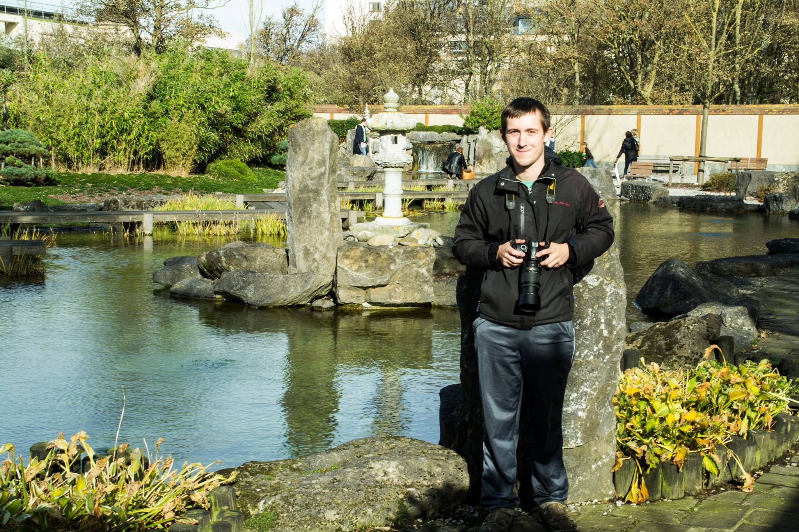

Hallo! Ik ben Thibault, een digitale kunstenaar uit België. Ik maak kunstwerken met passie, gevoel en oog voor detail. Elk werk vertelt een verhaal — van dierenportretten tot sfeervolle landschappen.
Mijn doel is om emoties vast te leggen in kleur, licht en vorm. Bedankt dat je mijn kunst bekijkt!
♡